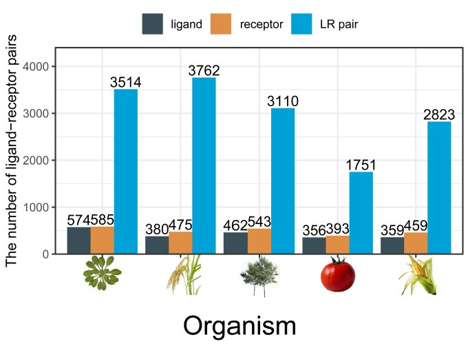

Download¶
Ligand-Receptor Interaction Pairs¶
The current PlantPhoneDB contains 3,514 unique reliable ligand-receptor pairs for Arabidopsis thaliana, which curated from seven resources, including plant.MAP, Interactome2.0, IntAct, BioGRID, Text-mining, STRING and Orthologs resources.
{kind=link}
By assigning orthologs of ligand-receptor pairs between Arabidopsis thaliana and other four plant species proteomes using the InParanoid algorithm, the number of ligand-receptor pairs identified ranged from 1,751 (Solanum lycopersicum) to 3,762 (Oryza sativa).
Organism |
Ligand |
Receptor |
LR pair |
|---|---|---|---|
Arabidopsis thaliana |
574 |
585 |
3514 |
Oryza sativa |
380 |
475 |
3762 |
Populus alba x Populus glandulosa |
462 |
543 |
3110 |
Solanum lycopersicum |
356 |
393 |
1751 |
Zea mays |
359 |
459 |
2823 |
Expression matrix¶
We kept the datasets with ≥ 1000 high-quality cells, which considered to be PASS datasets. In addition, PASS datasets without available expression matrix or with a large number of cells that consume high memory on our laptop were considered to be pending datasets. The rest of scRNA-seq datasets were considered to be FAIL datasets (< 1000 high-quality cells).
We provides 13 PASS processed scRNA-seq datasets.